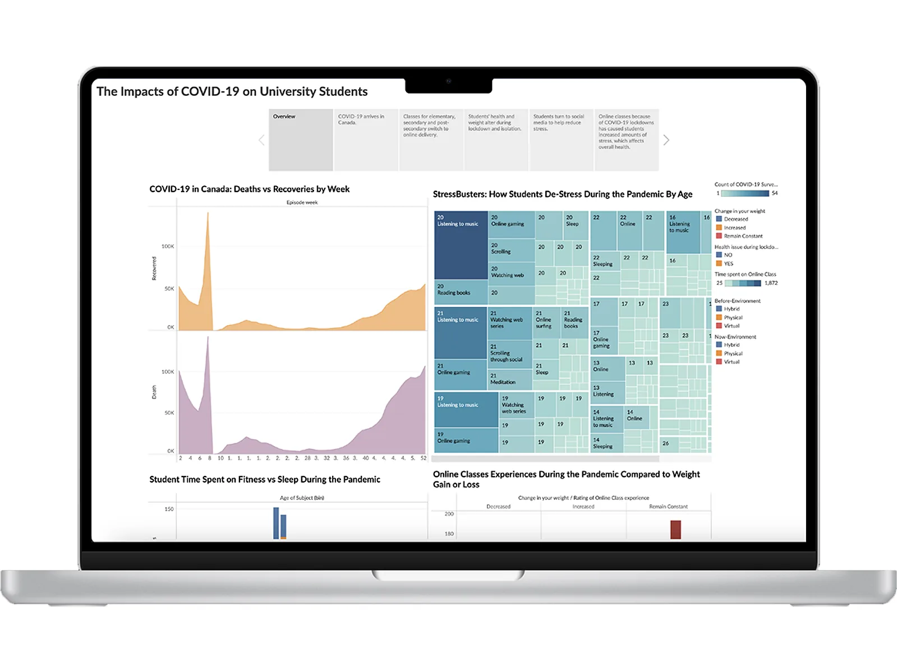

Information Visualization
Overview
This group project aimed to visualize the impact of COVID-19 on students by exploring data related to their academic performance, mental health, and access to technology. We collected data from various sources, including surveys, academic records, and news articles, and used different visualization techniques to present the data in a meaningful and engaging way.
Roles (Team Project)
- Designer: Mitch Wilson
- Coder: Katie Barker
- Scrum Coordinator: Kaitlin Laine
- Product Owner: Logan Senko
Process
Data Collection: We collected data from different sources, including online surveys, academic records, and news articles, to capture a comprehensive picture of the impact of COVID-19 on students.
Data Cleaning and Analysis: We cleaned and analyzed the data to identify patterns and insights that could inform our visualization. We used different statistical methods and visualization tools to uncover the relationships between different variables.
Visualization Design: We used various visualization techniques, including charts, graphs, and maps, to present the data in an engaging and accessible way. We ensured that our visualizations were easy to understand, informative, and aesthetically pleasing.
Iteration and Refinement: We iteratively refined our visualizations based on feedback from each other and from our peers. We also conducted user testing to ensure that our visualizations were effective in communicating our message.
The project's Tableau visualization, "The Impacts of COVID-19 on University Students," was created by Katie Barker, Kaitlin Laine, Logan Senko and Mitch Wilson.
Conclusion
Our project demonstrated the power of data visualization in communicating complex and sensitive issues. By visualizing the impact of COVID-19 on students, we hoped to raise awareness and promote discussions about how to support students during these challenging times. We learned valuable skills in data collection, cleaning, analysis, and visualization, and we also developed a deeper appreciation for the importance of teamwork and collaboration.